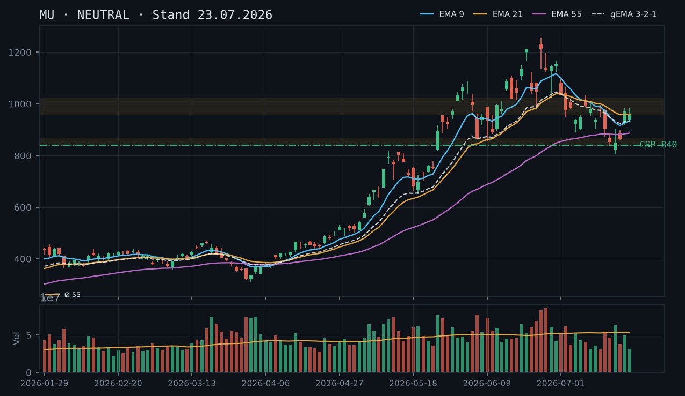
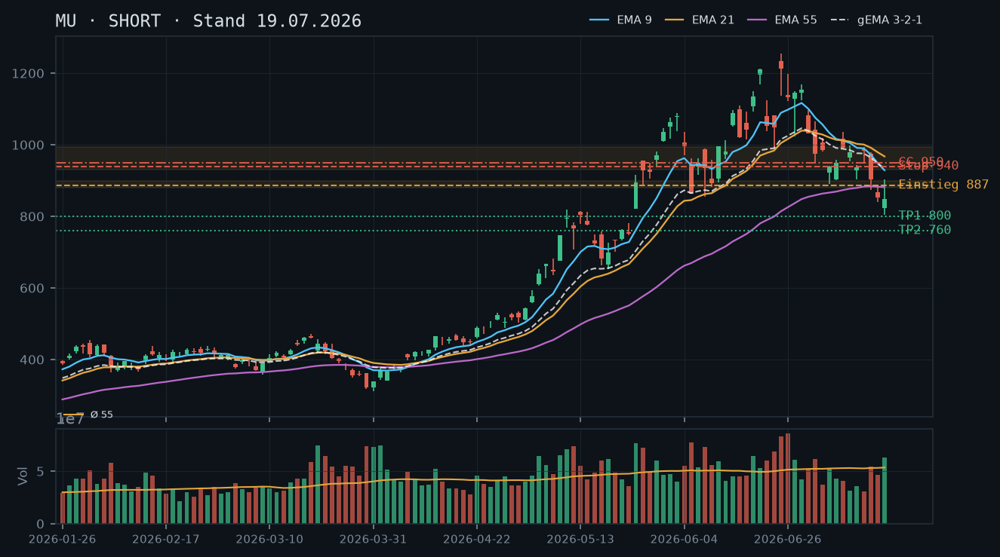
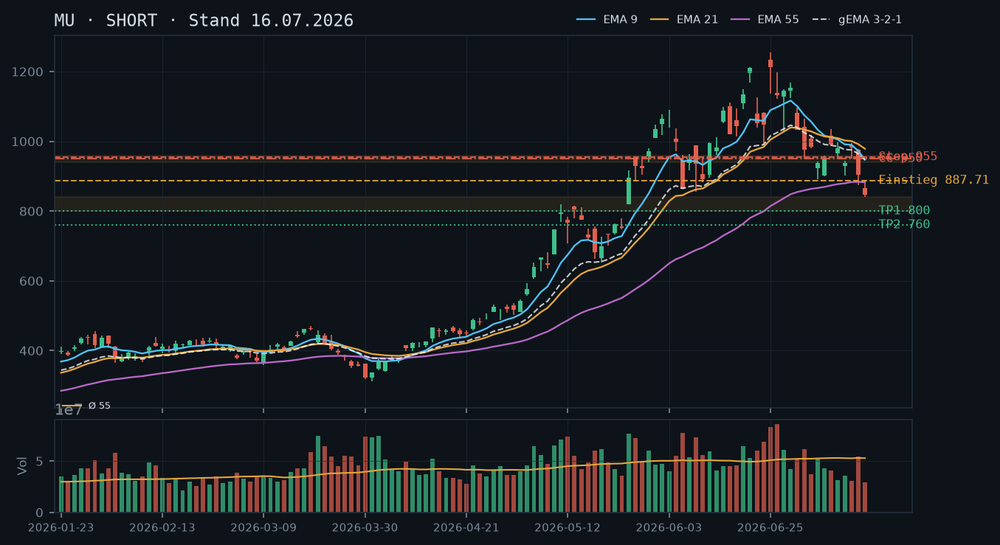
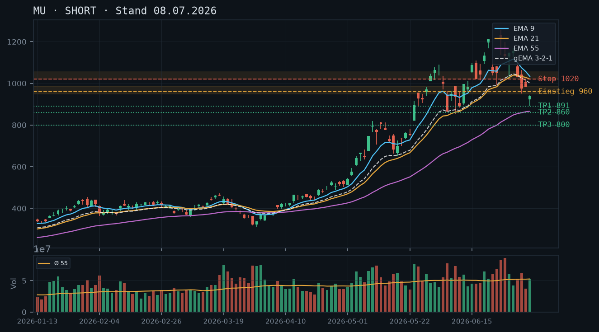

MU zeigt nach dem Tief bei ~804 USD (17.07.) eine deutliche Erholung auf 992 USD – der Kurs testet jetzt die kritische EMA9/EMA21-Konfluenz und den Widerstandsbereich 960–1.000 USD; die Short-These der Vorgänger-Analysen wird partiell falsifiziert, aber noch kein sauberer Trendwechsel bestätigt.

Der Abwärtstrend seit dem Doppeltop-Bereich (1.211–1.255 USD, 22./25.06.) ist strukturell intakt: tiefere Hochs und tiefere Tiefs dominieren das Bild. Das Tief vom 17.07. bei 804 USD ist der bisher tiefste Punkt. Seither zeigt MU jedoch eine V-förmige Erholung: 804 → 865 (20.07.) → 970 (21.07.) → 959 (22.07.) → 992 (aktuell, 23.07.). Diese Bounce-Intensität ist bemerkenswert und übertrifft alle bisherigen Erholungsversuche im Abwärtstrend. Der Kurs nähert sich nun dem entscheidenden Widerstandscluster 960–1.000 USD, welcher den ehemaligen Support-Bereich aus Mitte Juli repräsentiert. Ein nachhaltiger Schlusskurs über 1.000 USD würde das Bild graduell aufhellen.
Die letzten drei Kerzen zeichnen ein bullisches Reversal-Muster: Am 17.07. entstand eine Hammer-ähnliche Kerze mit langem Docht nach unten (Tief 804, Schluss 849) bei erhöhtem Volumen (rel. 1.18 – über Durchschnitt). Am 21.07. folgte eine starke Aufwärts-Marubozu mit Schluss 970 (rel. 0.92 – leicht unter Schnitt, was die Nachhaltigkeit noch einschränkt). Am 22.07. eine Doji/Inside-Bar-artige Kerze (High 982, Close 959, rel. Volumen 0.59 – deutlich unter Schnitt): Konsolidierung ohne Verkaufsdruck. Der heutige Gap-up auf 992 (+3.44%) bei noch unbekanntem Tagesvolumen bestätigt die Käufer-Dominanz kurzfristig.
Die EMA-Lage ist gespalten: EMA9 (934) liegt unter EMA21 (959), beide fallen noch – klassisch bärische Reihenfolge. EMA55 (887) zeigt erste Abflachung. Der gema_321 (934) befindet sich unterhalb von EMA21, was den Gesamttrend weiterhin als bärisch klassifiziert. Positiv: Der Kurs bei 992 notiert jetzt ÜBER EMA9 und EMA21 – das ist der erste derartige Test seit dem Breakdown Anfang Juli. Ein Schlusskurs über EMA21 (959) würde ein erstes bullisches Signal senden. Noch kein Golden Cross, kein EMA-Bullish-Stack.
| Richtung | Kein Trade |
| Einstieg | Kein direktionaler Einstieg – abwarten ob Kurs über 1.000 USD schließt (bullisches Signal) oder am Widerstand scheitert (erneuter Short-Ansatz ab ~1.000–1.020 USD) |
| Stop | – |
| Ziel | – |
| CRV | – |
Die Erholung von 804 auf ~992 USD (+23% in 5 Tagen) schafft erstmals seit Wochen eine Basis für einen vorsichtigen Cash-Secured Put – sofern das Tief bei 804 USD als vorläufige Unterstützung respektiert wird. Ein CC ist angesichts fehlenden Aktienbestands nur als Naked Call möglich und aktuell bei laufender Erholung nicht attraktiv. Der CSP mit Strike unterhalb der 840-USD-Zone (nächste technische Unterstützung) ist das präferierte Instrument.
| Geschäft | Cash-Secured Put |
| Strike | 840.0 |
| Puffer | 15.3 % |
| Zone | unter dem Tief vom 17.07. (804 USD) und dem Konsolidierungsbereich 840–865 USD (Hochs 17.–20.07.) |
| Verfall bis | 2026-08-01 (9 Tage) |
| Begründung | Strike 840 USD liegt unterhalb des wichtigen Konsolidierungsbereichs 840–865 USD, der sich nach dem Tief vom 17.07. (804 USD) gebildet hat. Der Kurs müsste 15.3% fallen, um diesen Strike zu gefährden – und dabei das frische Tief bei 804 USD erneut unterschreiten. Das EMA55 (887 USD) und der Bereich 840–865 USD bilden eine Konfluenz-Unterstützungszone. Andienungsszenario: Eine Andienung zu 840 USD wäre ein Kauf unterhalb des EMA55 in einer Zone, die zuletzt als Boden fungierte – technisch akzeptabel für einen mittelfristig orientierten Anleger. Der Anwender sollte in der Optionskette für Verfall 01.08.2026 prüfen: Prämie bei Strike 840 (sollte angesichts der erhöhten IV nach dem Trendbruch zweistellig sein), Delta (idealerweise -0.15 bis -0.25), Bid-Ask-Spread und Open Interest. Hinweis: Das 804-USD-Tief ist erst ein einmaliger Test – noch kein bestätigter Support. Erster Roll-Trigger: Kurs fällt unter 870 USD (Nähe zur EMA55-Zone). |
Bestand: Laut IBKR-Snapshot (11:37 Uhr, 23.07.2026) bestehen keine offenen Optionspositionen und kein Aktienbestand in MU. Der CC-Setup aus der Analyse vom 19.07. (Strike 950, Verfall 25.07.) wurde nicht eingegangen oder ist ausgelaufen – keine Roll-Empfehlung erforderlich. Der Verfall 25.07. liegt in zwei Tagen; falls doch eine Position besteht, ist sie mit hoher Wahrscheinlichkeit tief im Geld (Kurs 992 > Strike 950) und sollte sofort bewertet werden.
Die Short-Thesen vom 08.07., 16.07. und 19.07.2026 werden partiell bestätigt, partiell falsifiziert. Das Kursziel ~800 USD wurde fast erreicht (Tief 804 USD am 17.07.) – das ist eine starke Bestätigung der bärischen Richtungs-Einschätzung. Der CC-Strike 950 USD aus dem 16.07.-Setup (Verfall 24.07.) wäre heute tief im Geld – ein mahnendes Beispiel für die Naked-Call-Risiken, die in der 19.07.-Analyse explizit benannt wurden. Die aktuelle Erholung auf 992 USD widerspricht der Fortsetzung des Abwärtstrends und erfordert eine Neubewertung. Die Short-These ist damit noch nicht geschlossen, aber die Dynamik hat sich verändert.
MU bildet folgende Swing-Struktur aus:
Das Sequenz-Muster ist noch bärisch (tieferes Hoch, tieferes Tief), aber das Tempo der Erholung (+23% in 5 Handelstagen) ist ein klares Warnsignal für aktive Short-Positionen. Ein Schlusskurs über 1.000–1.020 USD würde ein höheres Hoch gegenüber dem Bounce vom 09.07. (1.035 USD) noch nicht etablieren, aber die Dynamik signifikant verändern. Erst ein Schlusskurs über ~1.050 USD (Swing-Hoch vom 17.07. war 903 – nein: Swing-Hoch 07.07. bei 942, 08.07. bei 959, 09.07. bei 1.035) würde das Bild bullisch kippen.
Das Reversal-Setup der letzten Kerzen im Detail:
Fazit Candlestick: Bullisches Reversal-Muster in der Entstehung, aber konsistent unter-durchschnittliches Volumen in der Erholungsphase ist ein Yellow Flag. Ein High-Volume-Schlusskurs über 1.000 USD würde die These stärken.
Stand 22.07.2026 (Schlusskurs 959): EMA9 = 934, EMA21 = 959, EMA55 = 887, gema_321 = 934.
Die Reihenfolge EMA9 (934) unter EMA21 (959) bei EMA55 (887) darunter ist klassisch bärisch, aber in Auflösung begriffen. Bemerkenswertes Detail: EMA9 und gema_321 sind wertgleich bei 934 – kein Kompressions-Artefakt, sondern Konvergenz. Der Kurs bei aktuell 992 liegt über EMA9 und über EMA21 – das ist der erste derartige Stand seit dem Breakdown Anfang Juli und ein kurzfristig bullisches Signal.
Für einen nachhaltigen EMA-Bullish-Stack (EMA9 > EMA21 > EMA55, Kurs darüber) ist noch Arbeit nötig. EMA21 muss drehen, EMA9 muss aufholen. Bei aktuellem Kurs ~992 würde EMA9 morgen auf ~945 steigen – der Stack könnte sich in 3–5 Handelstagen formieren, wenn der Kurs stabil bleibt.
Setup A – Abwarten und Long-Break (bevorzugt, konservativ):
Einstieg: Stop-Buy bei 1.005 USD (Tagesschluss über 1.000 USD abwarten, dann Break-Buy am Folgetag). Stop: 940 USD (unter EMA9 und EMA21). Ziel 1: 1.080 USD (Swing-Hoch 01.07.), Ziel 2: 1.145 USD (Swing-Hoch 29.06.). CRV Ziel 1: ca. 1.2:1 – knapp. CRV Ziel 2: ca. 2.2:1 – attraktiv. Risiko: Fehlausbruch an 1.000er-Marke.
Setup B – Short-Reversal am Widerstand (für Short-Trader):
Einstieg: Limit-Short bei 1.010–1.020 USD (falls Kurs am 1.000er-Bereich scheitert und Umkehrsignal zeigt). Stop: 1.060 USD. Ziel: 870 USD (EMA55-Bereich). CRV: ca. 2.3:1. Voraussetzung: Bärische Tageskerze (Shooting Star / Doji) im 1.000–1.020-Bereich.
Setup C – Kein direktionaler Trade (aktuell empfohlen):
Die Lage ist zu unklar für einen direktionalen Einstieg. Stillhalter-Strategien mit ausreichend Puffer sind die bessere Wahl in diesem Umfeld.
Zonen-Herleitung: Das absolute Tief liegt bei 804 USD (17.07., einmaliger Test – unbestätigter Support). Die Zone 840–865 USD wurde zwischen 17.07. und 20.07. als Basis für den aktuellen Bounce genutzt (Schluss 849 am 17.07., Schluss 865 am 20.07.). Diese Zone ist noch jung und nicht mehrfach bestätigt – technisch ein 'unbestätigter Bereich', aber mit frischer Preis-Aktion. EMA55 bei 887 USD bildet eine erste dynamische Unterstützung oberhalb davon.
Puffer: Strike 840 bei aktuellem Kurs 992 = 15.3% Puffer. Der Kurs muss die EMA55 (887), die Konsolidierungszone (840–865) und das absolute Tief (804) durchbrechen, um den Strike zu gefährden – drei Sicherheitsschichten.
Andienungsszenario: Andienung zu 840 USD bedeutet Kauf unterhalb des EMA55, in der Zone des frischen Tiefs. Das wäre fundamentales Trendbruch-Territorium – für einen langfristig orientierten MU-Anleger akzeptabel, für einen reinen Trader suboptimal. Wichtig: MU ist ein zyklischer Halbleiter-Wert mit hoher Volatilität. Die Cost-Basis nach Prämienabzug liegt effektiv unter 840 USD.
Roll-Trigger: Falls MU unter 890 USD fällt (Verlust des EMA55-Niveaus), sollte der CSP bewertet werden – entweder rollen (Strike tiefer, Laufzeit verlängern, Netto-Kredit) oder schließen, wenn die technische Lage eine Neubewertung erfordert. Ein Bruch unter 840 USD intraday ist ein sofortiger Alarm.
Optionskette (manuell zu prüfen): Prämie für CSP Strike 840, Verfall 01.08.2026 – bei aktueller IV (zyklischer Chip-Wert in volatiler Marktphase) ist eine Prämie von 5–15 USD im Bereich des Möglichen. Delta sollte bei -0.15 bis -0.20 liegen. Auf Bid-Ask-Spread und Open Interest achten – MU hat in der Regel gute Options-Liquidität.
Alternative CSP-Strikes: Strike 800 USD (unter absolutem Tief, ~19.4% Puffer) für mehr Sicherheit, aber geringere Prämie. Strike 870 USD (~12.3% Puffer, näher an EMA55) für höhere Prämie bei weniger Sicherheitspuffer.
Kein Aktienbestand (0 Aktien laut IBKR-Snapshot) – ein CC ist nicht möglich. Ein Naked Call oberhalb des 1.000–1.020 USD Widerstands wäre bei laufender Erholung riskant und widerspricht der NEUTRAL-Einschätzung. Daher kein CC/Naked-Call-Setup für heute. Falls der Kurs am 1.000er-Widerstand scheitert und wieder unter 950 USD fällt, wäre ein Naked Call Strike 1.050 USD für Verfall 01.08.2026 erneut prüfbar – aber erst nach technischer Bestätigung des Scheiterns.
MU bleibt im intakten Abwärtstrend – der EMA-Stack ist vollständig bärisch geordnet, der Kurs notiert unter allen EMAs, und die Bounce-Versuche scheitern konsequent an fallenden Widerständen; die Short-These vom 08. und 16.07. wird bestätigt.

MU hat das Doppeltop-Areal bei 1.211–1.255 USD (Juni-Hochs) nachhaltig verlassen und durchläuft seit Ende Juni einen beschleunigten Abwärtstrend mit einer Kette fallender Hochs und fallender Tiefs: Swing-Hoch 1.255 USD (25.06.) → 1.168 USD (24.06.-Bereich) → 1.148 USD (29.06.) → 994 USD (14.07.) → 887 USD (16.07.), Swing-Lows sukzessive tiefer. Der Kurs notiert aktuell bei ~853 USD und hat die im 16.07.-Setup genannte psychologische Marke 800–840 USD fast erreicht. Primärer Trend: SHORT. Die unbestätigte Unterstützungszone 800–840 USD liegt unmittelbar darunter.
Die letzten drei Kerzen zeigen ein klassisches Bärenmuster: 15.07. eine lange schwarze Kerze mit hohem Volumen (rel. 1.03), Schlusskurs 904 USD; 16.07. erneute Ausverkaufskerze auf 853 USD (rel. 0.88); 17.07. ein Inside-Day-artiger Bounce-Versuch (High 903, Close 849 USD) mit erhöhtem Volumen (rel. 1.18) – die Kerze schließt jedoch nahe dem Tief, was den Bounce-Fehlschlag dokumentiert. Kein bärisches Engulfing, aber auch kein bullisches Reversal-Signal erkennbar; der Selling Pressure hält an.
Die EMA-Struktur ist klar bärisch: EMA9 (928) > EMA21 (967) > EMA55 (882) in Bezug auf Niveau, wobei EMA9 und EMA21 beide fallend und weit über dem Kurs (853 USD) liegen – das ist ein ungewöhnliches Kompressions-Artefakt, weil EMA9 unter EMA21 liegt, EMA55 aber darunter fällt (882). EMA9 (928) < EMA21 (967) < Kurs 853 USD: Kurs läuft unter allen drei EMAs. Der gema_321 liegt bei ~933 und fällt steil – der gesamte gewichtete EMA-Verbund ist als Deckel über dem Kurs zu verstehen. Jeder Bounce in den 880–930-USD-Bereich trifft auf den EMA55 (882) und den fallenden EMA9 (928) als Widerstand.
| Richtung | Short |
| Einstieg | 887.00 (Limit-Short bei Bounce in EMA55-Zone 880–900 USD) |
| Stop | 940.00 (über EMA9 bei 928 und Widerstands-Cluster 930–940 USD) |
| Ziel | 800.00 (psychologische Marke / unbestätigte Unterstützungszone 800–840 USD) |
| CRV | 1.5 : 1 (bei Ziel 760 USD steigt CRV auf 2.4 : 1) |
Die Marktstruktur erlaubt weiterhin keinen Cash-Secured Put – kein bestätigter Support unter dem Kurs, und das 800-USD-Niveau ist bisher nur eine psychologische Marke ohne technische Bestätigung. Ein Covered Call auf Bounce-Niveau bleibt das einzige sinnvolle Stillhalter-Instrument; da kein Aktienbestand (0 Stück laut IBKR-Snapshot) vorliegt, handelt es sich um einen Naked Call mit entsprechend erhöhtem Risikoprofil – nur für erfahrene Stillhalter geeignet.
| Geschäft | Covered Call |
| Strike | 950.0 |
| Puffer | 11.3 % |
| Zone | über EMA9 (928 USD) und Widerstands-Cluster 930–960 USD (Swing-Hochs 07.–14.07.) |
| Verfall bis | 2026-07-25 (6 Tage) |
| Begründung | Strike 950 USD liegt klar oberhalb des fallenden EMA9 (928 USD) und des Widerstands-Clusters aus den Swing-Hochs 07.–14.07. (942–994 USD, Schwerpunkt 930–960 USD). Der Kurs müsste vom aktuellen Niveau rund 11,3% steigen, um in Gefahr zu geraten – und dabei gleich drei Widerstandsebenen (EMA55 bei 882, EMA9 bei 928, Cluster 930–960) überwinden. Andienungsszenario: Ein Anstieg über 950 USD würde eine fundamentale Trendwende signalisieren (Bruch über alle fallenden EMAs und den Widerstands-Cluster) – in diesem Fall wäre die gesamte Short-These zu revidieren und der Verlust aus dem Naked Call wäre der geringere Schaden. Wichtig: Da kein Aktienbestand vorliegt, ist dies ein Naked Call (unbegrenztes Upside-Risiko). Der Anwender muss in der Optionskette für Verfall 25.07.2026 die Prämie bei Strike 950 USD prüfen – bei der aktuell erhöhten Volatilität (Abwärtstrend mit täglichen Ranges von 50–100 USD) sollte eine zweistellige Prämie stehen. Auf Bid-Ask-Spread und Open Interest achten; ggf. Strike 1000 USD als Alternative für mehr Puffer. |
Bestand: Laut IBKR-Snapshot (12:10 Uhr, 19.07.2026) bestehen keine offenen Optionspositionen in MU. Der CC vom 16.07.-Setup (Strike 950, Verfall 24.07.) wurde offenbar nicht eingegangen oder ist bereits ausgelaufen – keine Roll-Empfehlung erforderlich. Für einen Neueinstieg als Naked Call auf Bounce-Niveau gelten die obigen Parameter.
Die Short-These vom 08.07.2026 (Einstieg 960, Ziel 860 USD) wird vollständig bestätigt: MU hat das Ziel 860 USD unterschritten und notiert aktuell bei ~853 USD. Die Analyse vom 16.07.2026 (Einstieg 887, Ziel 800 USD) ist ebenfalls auf Kurs – der Kurs hat das Einstiegsniveau bereits unterschritten, das Ziel 800 USD liegt noch vor uns. Der CC-Strike 950 (Verfall 24.07.) aus der 16.07.-Analyse bietet laut IBKR-Snapshot keine offene Position – es ist unklar, ob er nicht eingegangen wurde. Für den 19.07. gilt: Die bearishe Struktur ist intakt, keine Signale einer Trendwende.
MU durchläuft seit dem Doppeltop-Bereich 1.211–1.255 USD (Hochs 22.06. und 25.06.2026) einen nachhaltigen Abwärtstrend. Die Sequenz fallender Hochs und Tiefs ist eindeutig:
Der nächste relevante Unterstützungsbereich liegt bei 800–840 USD – dieser wurde noch nicht mehrfach getestet und gilt daher als unbestätigter Bereich. Die psychologische Marke 800 USD ist das primäre Kursziel. Darunter wäre der Bereich 760–780 USD die nächste Orientierung (Konsolidierungstiefs aus dem Mai-Cluster Anfang Mai 2026 nicht vorhanden; aus Fibonacci-Projektion des Doppeltop-Abfalls ab 1.255 USD: 0.5-Retracement auf ~730 USD).
Widerstandscluster nach oben:
Die letzten drei Tageskerzen sind aufschlussreich:
Kein bullisches Reversal-Muster erkennbar (kein Hammer mit langem Docht und Schluss nahe Hoch, kein Engulfing). Die Kerzenkonstellation bestätigt den Verkaufsdruck.
Die EMA-Reihenfolge ist nominal ungewöhnlich: EMA9 (928) < EMA21 (967), aber EMA55 (882) liegt darunter. Das entsteht, weil EMA55 träger auf den langen Aufwärtstrend März–Juni reagiert und noch nicht so weit gefallen ist wie EMA9/21 relativ zum aktuellen Kurs. Kurs (853) liegt unter allen drei EMAs – das ist das entscheidende bärische Signal. Der gema_321 bei ~933 USD fällt steil und bildet gemeinsam mit EMA9 und EMA21 einen Deckel über dem Markt.
Abstand zum EMA55 (882): ~3,4% – der nächste relevante EMA. Ein Bounce bis 882 wäre charttechnisch möglich (Mean-Reversion-Versuch), würde aber im Abwärtstrend als Verkaufsgelegenheit gewertet. Der EMA55 fällt erstmals seit Wochen (von 884 auf 882 in den letzten Tagen) – auch der langfristige Anker dreht nun bärisch.
Setup A (bevorzugt) – Short auf Bounce:
Setup B – Aggressiver Short auf aktuellem Niveau:
Setup C – Warten auf Bestätigung des 800-USD-Bruchs (Ausbruchs-Short):
Bevorzugtes Setup bleibt Setup A – der Bounce bietet Einstiegspräzision und ein akzeptables CRV.
⚠️ Wichtiger Hinweis: Laut IBKR-Snapshot (19.07.2026, 12:10 Uhr) hält der Anwender 0 MU-Aktien. Ein Covered Call ist daher nicht möglich. Das beschriebene Setup ist ein Naked Call mit theoretisch unbegrenztem Verlustrisiko – nur für erfahrene Stillhalter mit entsprechendem Margin-Rahmen geeignet.
Strike-Herleitung 950 USD (Naked Call):
Andienungsszenario: Würde MU auf 950 USD ansteigen, hätte der Kurs alle fallenden EMAs nach oben durchbrochen und den Widerstands-Cluster überwunden – das wäre eine fundamentale Trendwende. In diesem Szenario ist die gesamte Short-Analyse hinfällig, und der Verlust aus dem Naked Call wäre das geringere Problem im Vergleich zu einer falsch positionierten Gesamtstrategie. Ein solcher Anstieg ohne Katalysator (z.B. Earnings-Surprise, Macro-Schock) ist im aktuellen technischen Umfeld wenig wahrscheinlich.
Roll-Trigger: Sollte MU einen Tagesschluss über 900 USD (Bruch über EMA55) erzielen, ist der Naked Call zu evaluieren und ggf. auf einen höheren Strike (z.B. 1.000 USD) zu rollen oder zu schließen. Ein Schluss über 940 USD (Widerstands-Cluster) wäre ein klares Schließ-Signal ohne Diskussion.
Alternative – Strike 1.000 USD: Für einen konservativeren Ansatz bietet sich Strike 1.000 USD an (Puffer ~17,2%, psychologische Marke, oberhalb des gesamten Widerstands-Clusters). Geringere Prämie, aber deutlich mehr Sicherheitsmarge. In der Optionskette für Verfall 25.07.2026 sollten Prämie, Delta (idealerweise Delta < -0.15) und Bid-Ask-Spread für beide Strikes verglichen werden.
Was in der Optionskette zu prüfen ist:
MU setzt den Abwärtstrend fort – der Bruch unter 900 USD mit beschleunigtem EMA-Zerfall bestätigt die Short-These vom 08.07.; nächste relevante Unterstützung liegt erst im 800–840-USD-Bereich.

MU befindet sich in einem intakten kurzfristigen Abwärtstrend. Nach dem Doppeltop-Bereich bei 1.211–1.255 USD (22./25. Juni) hat die Aktie konsequent niedrigere Hochs und niedrigere Tiefs ausgebildet: 1.213,56 → 1.198,71 → 1.148,79 → 994,80 → 978,40 → 887,71 USD. Das heutige Tagestief bei 840,51 USD und der Schlusskurs bei 846,00 USD markieren ein neues Mehrwochen-Tief. Der Bereich 900–960 USD, der zuletzt als Unterstützung fungierte, ist gebrochen. Die nächste potenzielle Stützzone liegt im Bereich 800–840 USD, abgeleitet aus den Konsolidierungslevels von Ende Mai / Anfang Juni (Cluster um 895–928 USD ist ebenfalls gefallen). EMA55 bei 882,59 USD wurde heute ebenfalls dynamisch unterschritten – ein bärisches Signal.
Die gestrige Kerze (15.07.) war bereits ein deutlicher Bear-Candle mit langer unterer Docht-Verlängerung (Low 873,63, Close 904,28), was kurzfristigen Verkaufsdruck signalisierte. Die heutige Kerze (16.07.) setzt das fort: Eröffnung bei 866,77, Tageshoch 887,71, Tief 840,51, Schluss 846,00 – ein kleiner Körper mit oberem Docht, was anzeigt, dass jedes Erholungsversuch intraday abverkauft wurde. Kein Kerzenmuster, das Bodenbildung anzeigt. Das Volumen mit rel_volumen 0,56 (nur 56% des 55er-Schnitts) ist unterdurchschnittlich – der Selloff geschieht unter geringem Volumen, was jedoch in Sommermärkten üblich ist und keine Entwarnung gibt, solange kein Reversal-Muster auf hohem Volumen erscheint.
Die EMA-Struktur ist eindeutig bärisch: EMA9 (947,32) < EMA21 (978,63), und der Kurs (846,00) liegt deutlich unterhalb aller drei EMAs – EMA55 bei 882,59, EMA21 bei 978,63, EMA9 bei 947,32. Der gema_321 bei 946,97 bestätigt den bearischen Verbund: Kurs ist ca. 12% unter dem gewichteten EMA-Verbund. EMA9 und EMA21 zeigen weiter nach unten, EMA55 beginnt abzuflachen. Keine Kreuzung oder Kompression erkennbar – die Abstände weiten sich. Die Short-These der Analyse vom 08.07. (Ziel ~850 USD) hat sich damit fast punktgenau bewahrheitet.
| Richtung | Short |
| Einstieg | 887,71 (Limit-Short bei Bounce in den 880–900-USD-Bereich / ehem. EMA55-Zone) |
| Stop | 955,00 (über EMA9 und letztem Swing-Hoch vom 14.07. bei 994,80) |
| Ziel | 800,00 (unbestätigter Bereich / psychologische Marke / proj. Ausbruchs-Messregel) |
| CRV | 1.3 : 1 (konservativ; bei Ziel 760 USD steigt CRV auf 2.0 : 1) |
Im laufenden Abwärtstrend ist ein Cash-Secured Put aktuell nicht sinnvoll – kein tragfähiger Support wurde bisher bestätigt, und Andienung wäre verfrüht. Ein Covered Call (oder Naked Call für erfahrene Stillhalter) auf einem Bounce oberhalb des gebrochenen EMA55-Bereichs (880–900 USD) ist das passende Instrument für dieses Umfeld.
| Geschäft | Covered Call |
| Strike | 950.0 |
| Puffer | 12.4 % |
| Zone | über EMA9 (947 USD) und Widerstandscluster 940–960 USD (Hochs vom 07.–10.07.) |
| Verfall bis | 2026-07-24 (8 Tage) |
| Begründung | Strike 950 liegt oberhalb des Widerstands-Clusters aus den Hochs vom 07.–10. Juli (942–998 USD, Schwerpunkt 940–960 USD) und über dem fallenden EMA9 (947 USD). Der Kurs müsste ca. 12,4% steigen, um in Gefahr zu geraten – angesichts des intakten Abwärtstrends ein attraktiver Puffer. Andienungsszenario: Wäre ein Kursanstieg über 950 USD ein Problem? In dem Fall hätte sich die Trendstruktur fundamental verändert (Bruch über EMA9 und Widerstandszone), was ohnehin eine Neubeurteilung erfordert. Der Anwender sollte in der Optionskette die Prämie bei Strike 950 für den 24.07.-Verfall prüfen – angesichts der erhöhten historischen Volatilität der letzten Wochen sollte hier eine attraktive Prämie stehen. Auf Liquidität (Bid-Ask-Spread) und IV-Niveau achten. |
Die Short-These vom 08.07. wird durch die heutigen Daten vollständig bestätigt und übertroffen. Das damalige Kursziel lag bei ~850 USD (EMA55-Bereich / Mai-Unterstützung). Der heutige Schlusskurs von 846,00 USD hat dieses Ziel nahezu exakt erreicht. Der empfohlene Einstieg bei 960 USD per Limit-Bounce war mit dem High vom 09.07. (1.035,50 USD) und dem anschließenden Verfall ideal positionierbar. Der damalige Stop bei 1.020 USD wurde nie ausgelöst – ein sauberer Trade. Der EMA55 (damals als Zielzone genannt) bei heute 882,59 USD wurde heute dynamisch unterschritten.
MU hat nach dem Doppeltop bei 1.211–1.255 USD (22./25. Juni 2026, bestätigt durch das zweite High vom 25.06. mit Volumen 1,63x) einen klassischen Abwärtstrend etabliert:
Die Nackenlinie des Doppeltops lag grob bei ~1.030–1.050 USD (Tiefs vom 23.–24. Juni). Diese wurde am 01./02. Juli gebrochen. Das Kursmessziel eines solchen Doppeltops (Höhe: ~220 USD) projiziert auf den Ausbruchspunkt (~1.050 USD) ergibt ein theoretisches Ziel von ~830 USD – kongruent mit dem aktuellen Preisbereich.
Die Zone 800–840 USD ist als nächste potenzielle Unterstützung zu identifizieren: Hier lagen die Hochs und Konsolidierungen vom 11.–14. Mai 2026 (Cluster 795–818 USD). Dies ist jedoch bisher unbestätigt als Support – erst ein Test mit anschließender Stabilisierung würde diese Zone validieren. Darunter kommt der Bereich 750–770 USD (Konsolidierung Ende April / Anfang Mai) in Frage.
Die letzten fünf Kerzen zeichnen ein konsistent bärisches Bild:
Der Kurs (846 USD) handelt aktuell 11% unter EMA9 (947), 13,5% unter EMA21 (978) und 4,4% unter EMA55 (882). Der gema_321 bei 946,97 liegt ebenfalls deutlich über dem Kurs. Interessant: EMA55 (882,59) > EMA9 (947,32)? Nein – EMA9 (947) > EMA55 (882) > Kurs (846). Die Reihenfolge EMA21 > EMA9 > EMA55 ist eine Kompressions-Anomalie im Übergang: EMA21 (978) steht noch über EMA9 (947), obwohl der Trend schon seit Wochen fällt – das liegt am trägen EMA21, der den rapiden Anstieg von März–Juni noch nachzieht. In wenigen Tagen dürfte EMA9 unter EMA21 kreuzen (Death Cross im Kurzfristbereich), was weiteres bearisches Signal wäre.
Setup A (bevorzugt) – Short-Continuation bei Bounce:
Setup B – Abwarten auf Stabilisierung (Long-Kontra, nur für aggressive Trader):
Setup C – Momentum-Short ohne Bounce:
Ein Cash-Secured Put erfordert eine identifizierbare, mehrfach getestete Unterstützungszone als Sicherheitspuffer. Der Bereich 800–840 USD ist bisher unbestätigt als Support – er wurde noch nie von unten getestet und hochgekauft. Bei einem laufenden Abwärtstrend mit intaktem Momentum und ohne Bodenbildungssignal wäre ein CSP hier auf hohem Andienungsrisiko. Andienung zu 800 USD wäre zwar langfristig möglicherweise attraktiv, aber zu früh ohne technische Bestätigung. CSP = null bis zur Bodenbildung.
Zonen-Herleitung: Der Bereich 940–960 USD ist durch folgende Datenpunkte als Widerstand identifiziert:
Der Strike 950 liegt damit über dem gesamten EMA-Widerstandsverbund und dem Kurscluster. Puffer: (950 - 846) / 846 = 12,3%.
Andienungsszenario: Ein Kursanstieg über 950 USD bis zum 24.07. würde bedeuten, dass MU in 8 Handelstagen ~12% zulegt. Dies wäre nur möglich bei einem fundamentalen Katalysator (z.B. unerwartete Earnings-Guidance) oder einer kompletten Trendumkehr. In dem Fall hätte sich die gesamte Trendstruktur verändert – der Stillhalter würde den CC dann idealerweise vorher rollen (Roll-Trigger: Kursanstieg über 900 USD auf hohem Volumen >1,3x Schnitt oder Annäherung an Strike auf 5% Distanz).
Roll-Trigger explizit:
Was in der Optionskette prüfen: Prämie bei Strike 950 Call, Verfall 24.07.2026 – angesichts der HV der letzten Wochen (MU hatte Moves von 5–15% in Einzeltagen) sollte die IV erhöht sein. Bid-Ask-Spread beachten (bei illiquideren Strikes kann dieser erheblich sein). Open Interest >500 Kontrakte anstreben für vernünftige Fills.
MU bricht nach Doppeltop-Bereich um 1.211-1.255 USD mit beschleunigtem Verkaufsdruck unter alle kurzfristigen EMAs ein – kurzfristig bärisches Bild mit Ziel ~850 USD.

Nach einem imposanten Aufwärtstrend von ~320 USD (März) auf das Allzeithoch ~1.255 USD (25. Juni) hat MU eine klare Topbildung vollzogen: Das Hoch vom 22. Juni (1.213 USD) wurde am 25. Juni knapp übertroffen (1.255 USD), seither folgen tiefere Hochs und tiefere Tiefs. Der Kurs hat in weniger als zwei Wochen über 23 % korrigiert. Das nächste nennenswerte Support-Niveau liegt im Bereich 850–900 USD (EMA55 und frühere Konsolidierungszone Mai).
Die letzten drei Kerzen zeigen klare Schwäche: Am 1. Juli eine lange rote Kerze mit tiefem Close (1.032 USD), am 2. Juli weitere Abgaben bis ~950 USD Intraday-Tief, und die letzte Kerze vom 7. Juli öffnete mit Gap-Down bei 923 USD und schloss auf 938 USD – ein schwacher Abpraller ohne bullische Überzeugung. Das rel. Volumen ist moderat (0,99), was auf noch keine Kapitulation hindeutet.
Der EMA9 (1.033) liegt bereits deutlich unter EMA21 (1.020), beide fallen steil. Der EMA55 (866) ist weit entfernt, der Kurs (938) liegt nun unter EMA9 und EMA21 – bärische EMA-Reihenfolge. Der gema_321 (1.001) fällt ebenfalls und bestätigt den intakten Abwärtstrend im EMA-Verbund.
| Richtung | Short |
| Einstieg | 960.00 (Limit bei Bounce in EMA9-Widerstandszone) |
| Stop | 1.020.00 (über EMA21 und letztem Swing-Hoch) |
| Ziel | 860.00 (EMA55-Bereich / Mai-Unterstützung) |
| CRV | 1.7 : 1 |
MU hat einen der stärksten Aufwärtstrends im Halbleitersektor hinter sich: Von ~312 USD (31. März) auf das Allzeithoch von 1.255 USD am 25. Juni – ein Anstieg von fast 300 % in drei Monaten. Dieser Impuls wurde maßgeblich getrieben durch Earnings-Erwartungen und KI-Nachfrage-Fantasie im DRAM/NAND-Bereich.
Topbildung: Das Hoch vom 22. Juni (1.213,56 USD) wurde am 25. Juni mit 1.255 USD marginal überboten – klassisches Doppel-/Dreifach-Top-Muster in Entstehung. Seitdem: tiefere Hochs (26. Juni: 1.198 USD, 29. Juni: 1.148 USD, 7. Juli: 942 USD). Die Tiefpunkte sinken ebenfalls. Die Struktur zeigt klar: Trendwende von Aufwärts auf Abwärts.
Wichtige Support-Levels:
Wichtige Widerstands-Levels:
Die Kerzen der letzten fünf Handelstage zeichnen ein eindeutig bärisches Bild:
Keine bullischen Umkehrformationen (kein Hammer, kein Morning Star) erkennbar. Die Abfolge schwacher Closes auf fallenden Levels ist das Gegenteil eines Reversal-Setups.
Aktuelle Werte (07. Juli): EMA9: 1.033 | EMA21: 1.020 | EMA55: 866 | gema_321: 1.001 | Kurs: 938
Der Kurs (938) liegt unter EMA9 (1.033) und EMA21 (1.020) – beide fallen steil. Die bärische Kreuzung (EMA9 unter EMA21) ist vollzogen. Der Abstand des Kurses zum EMA55 (866) beträgt noch ~72 USD – das zeigt, dass eine weitere Annäherung/Mean-Reversion zum EMA55 plausibel ist.
Der gema_321 (1.001) dreht nach unten und liegt ebenfalls über dem Kurs, was den übergeordneten Verkaufsdruck im gewichteten EMA-Verbund bestätigt. Normalerweise fungiert der gema_321 als dynamischer Support in Aufwärtstrends – aktuell ist er Widerstand.
Der EMA55 bei 866 USD ist der nächste relevante magnetische Bereich nach unten. In starken Korrekturphasen von MU (z.B. März 2026: Absturz von 462 auf 312) wurde der EMA55 häufig als erste Anlaufstelle genutzt.
Setup A (bevorzugt): Short bei Bounce in EMA9-Zone
Setup B: Aggressiver Short bei heutigem Kurs
Setup C: Long-Reversal (nur wenn Signale erscheinen)
Risikofaktoren: MU ist ein volatiler Halbleiter-Titel. Positive Branchen-News (AI-Capex, DRAM-Preiserhöhungen) könnten zu V-förmigen Rebounds führen. Position-Sizing entsprechend begrenzen. Das fehlende Kapitulationsvolumen (kein rel. Volumen >2,0x in der Korrektur) deutet darauf hin, dass die Korrektur möglicherweise noch nicht zu Ende ist.